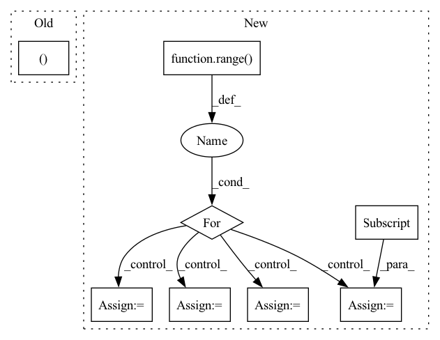

Pattern ID :12976
Before Change
:rtype: a ROS pose
ros_pose = ROS_Pose()
data = pose.data.reshape((-1After Change
ros_pose.source_img = image
data = pose.data
keypoints = Detection2DArray()
for i in range( data.shape[0]):
keypoint = Detection2D()
keypoint.bbox = BoundingBox2D()
keypoint.results.append(ObjectHypothesisWithPose())
keypoint.bbox.center = Pose2D()
keypoint.bbox.center.x = data[i][0]
keypoint.bbox.center.y = data[i][1]
keypoint.bbox.size_x = 0
keypoint.bbox.size_y = 0
keypoint.results[0].id = pose.id
if pose.confidence:
keypoint.results[0].score = pose.confidence
keypoints.detections.append(keypoint)
return keypoints
In pattern: SUPERPATTERN
Frequency: 4
Non-data size: 8
Instances Fragment ID: 43760155
Project Name: opendr-eu/opendr
Commit Name: d7c1cc6877998d39325d38c640fba65b5241446d
Time: 2021-05-06
Author: passalis@csd.auth.gr
File Name: projects/opendr_ws/src/ros_bridge/src/opendr_bridge/bridge.py
M Class Name: ROSBridge
N Class Name: ROSBridge
M Method Name: to_ros_pose(3)
N Method Name: to_ros_pose(2)
M Parent Class:
N Parent Class:
M File Name: projects/opendr_ws/src/ros_bridge/src/opendr_bridge/bridge.py
N File Name: projects/opendr_ws/src/ros_bridge/src/opendr_bridge/bridge.py
M Start Line: 68
M End Line: 74
N Start Line: 62
N End Line: 92
Before Change
labels = []
pointer = self.data_idx
for data_point in range(self.num_data_points):
datum, label = self.dataloader.dataset[pointer]
data += [datum]
labels += [torch.as_tensor(label)]
pointer += server_payload["data"].classesAfter Change
optimizer = torch.optim.SGD(self.model.parameters(), lr=self.local_learning_rate)
seen_data_idx = 0
for step in range( self.num_local_updates):
data = user_data[seen_data_idx: seen_data_idx + self.num_data_per_local_update_step]
labels = user_labels[seen_data_idx: seen_data_idx + self.num_data_per_local_update_step]
seen_data_idx += self.num_data_per_local_update_step
seen_data_idx = seen_data_idx % self.num_data_points
optimizer.zero_grad()
// Compute the forward pass Fragment ID: 43759679
Project Name: jonasgeiping/breaching
Commit Name: 1ab2867fea20551797c9aea8ae67099093ec7180
Time: 2021-10-01
Author: jonas.geiping@googlemail.com
File Name: breaching/cases/users.py
M Class Name: UserMultiStep
N Class Name: UserMultiStep
M Method Name: compute_local_updates(2)
N Method Name: compute_local_updates(2)
M Parent Class: UserSingleStep
N Parent Class: UserSingleStep
M File Name: breaching/cases/users.py
N File Name: breaching/cases/users.py
M Start Line: 151
M End Line: 187
N Start Line: 158
N End Line: 200
Before Change
// Select data
data, labels = self.dataloader[self.data_idx // self.dataloader.batch_size]
data, labels = data[0:self.num_data_points], labels[0:self.num_data_points]
data = data.to(**setup)
labels = labels.to(device=setup["device"])
After Change
data = []
labels = []
pointer = self.data_idx
for data_point in range( self.num_data_points):
datum, label = self.dataloader.dataset[pointer]
data += [datum]
labels += [torch.as_tensor(label)]
pointer += server_payload["data"].classes
data = torch.stack(data).to(**self.setup)
labels = torch.stack(labels).to(device=self.setup["device"])
Fragment ID: 43759757
Project Name: jonasgeiping/breaching
Commit Name: 9970fc2cd79885d2710383036d5ff70dc67b6b03
Time: 2021-09-05
Author: jonas.geiping@googlemail.com
File Name: breaching/cases/users.py
M Class Name: UserSingleStep
N Class Name: UserSingleStep
M Method Name: compute_local_updates(2)
N Method Name: compute_local_updates(2)
M Parent Class: torch.nn.Module
N Parent Class: torch.nn.Module
M File Name: breaching/cases/users.py
N File Name: breaching/cases/users.py
M Start Line: 43
M End Line: 51
N Start Line: 43
N End Line: 57
Before Change
def __call__(self, x): return x.sequential(self.net)
def train_cifar():
X,Y = fetch_cifar()
model = SpeedyResNet()
optimizer = optim.SGD(get_parameters(model))
train(model, X, Y, optimizer, steps=X.shape[0]//512, BS=512)After Change
// https://www.anandtech.com/show/16727/nvidia-announces-geforce-rtx-3080-ti-3070-ti-upgraded-cards-coming-in-june
// 136 TFLOPS is the theoretical max w float16 on 3080TI
for i in range( 10):
X, Y = fetch_batch(X_train, Y_train, BS=512)
CL.time_sum, CL.kernel_count = 0, -1
CL.ops_sum = 0 // TODO: this should be GlobalCounters.global_ops
GlobalCounters.global_ops = 0
st = time.monotonic()
loss = train_step_jitted(model, optimizer, X, Y)
et = time.monotonic()
loss_cpu = loss.detach().cpu().data[0]
cl = time.monotonic()
print(f"{(cl-st)*1000.0:7.2f} ms run, {(et-st)*1000.0:7.2f} ms python, {(cl-et)*1000.0:7.2f} ms CL, {loss_cpu:7.2f} loss, {CL.mem_used/1e9:.2f} GB used, {GlobalCounters.global_ops*1e-9/(cl-st):9.2f} GFLOPS")
//train(model, X, Y, optimizer, steps=X.shape[0]//BS, BS=BS) Fragment ID: 43760257
Project Name: geohot/tinygrad
Commit Name: cccfea4b25cbf668a746328717051e32ed709142
Time: 2023-01-30
Author: geohot@gmail.com
File Name: examples/hlb_cifar10.py
M Class Name: AnonimousClass
N Class Name: AnonimousClass
M Method Name: train_cifar(0)
N Method Name: train_cifar(0)
M Parent Class:
N Parent Class:
M File Name: examples/hlb_cifar10.py
N File Name: examples/hlb_cifar10.py
M Start Line: 47
M End Line: 50
N Start Line: 87
N End Line: 116